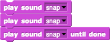

how many finger snaps do you you hear?
Now that you feel comfortable using the Snap! user interface, you can begin to examine how sprites and blocks interact with one another. Right-click or command-click (Mac) this link to open the attached Snap! project in a new tab.
The play sound blocks from earlier allow us to control when and how many sounds we hear.
If you run this script (which should already appear in the first sprite's scripting area):
how many finger snaps do you you hear?
How about this one:

How many snaps do you you hear now?
Experiment with these blocks:
1) How about two play sound [snap] and then one play sound [snap] until done?

play sound [snap] until done and then one play sound [snap]?